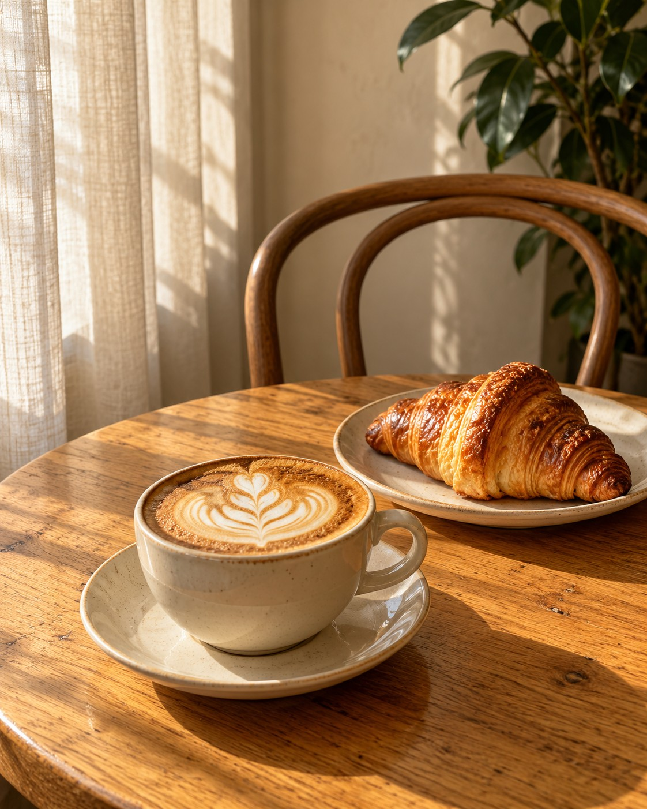

Место для
кофе. И себя.
Завтраки, кофе и десерты
в творческом пространстве Алматы.

Хороший день начинается без спешки.
Больше, чем
чашка кофе.
Lati Cafe — кофейня в творческом пространстве.
Здесь есть место завтраку, разговору и вдохновению.
Поговорим?
+7 700 350 41 01WhatsAppInstagramПланируете зайти?
Напишите нам — уточним время работы
и поможем с вашим вопросом.